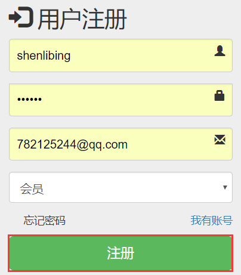
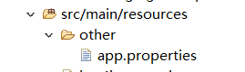

1、HttpClient远程接口调用
1)用户注册

注册按钮button提交表单时，要return false
form表单
<!-- action="http://localhost:8082/scw-restapi/member/regist" -->
<form class="form-signin" role="form" action="${ctp}/member/regist"
method="post" id="regForm">
...
</form>
js提交表单
$("#submitBtn").click(function() {
var loginType = $("select.form-control").val();
log("注册类型==============>", loginType)
/* if (loginType == "管理") {
$("#regForm").submit();
} else {
alert("此功能尚未开通");
} */
$("#regForm").submit();
return false
})
2)加载外部资源文件

app.properties
restapi.server.ip=127.0.0.1
restapi.server.port=8082
restapi.server.apppath=scw-restapi
编辑springmvc.xml
<!-- 引入外部配置文件 -->
<context:property-placeholder
location="classpath:other/app.properties" />
RestApiServerInfo.java
@Controller
public class RestApiServerInfo {
// MemberService memberService;
@Value("${restapi.server.ip}")
private String restapiserver;
@Value("${restapi.server.port}")
private String restapiport;
@Value("${restapi.server.apppath}")
private String appPath;
public String getRestApiURL() {
System.out.println("http://" + restapiserver + ":" + restapiport);
return "http://" + restapiserver + ":" + restapiport + "/" + appPath;
}
}
3)HTTPClient工具远程调用接口
导入依赖
<!-- https://mvnrepository.com/artifact/org.apache.httpcomponents/httpclient -->
<dependency>
<groupId>org.apache.httpcomponents</groupId>
<artifactId>httpclient</artifactId>
<version>4.5.3</version>
</dependency>
发送post请求
public static String httpPostRequest(String url, Map<String, Object> params)
工具类HttpClientUtil.java
package com.atguigu.project;
import java.io.IOException;
import java.io.UnsupportedEncodingException;
import java.net.URISyntaxException;
import java.util.ArrayList;
import java.util.Map;
import org.apache.http.HttpEntity;
import org.apache.http.NameValuePair;
import org.apache.http.client.ClientProtocolException;
import org.apache.http.client.entity.UrlEncodedFormEntity;
import org.apache.http.client.methods.CloseableHttpResponse;
import org.apache.http.client.methods.HttpGet;
import org.apache.http.client.methods.HttpPost;
import org.apache.http.client.methods.HttpRequestBase;
import org.apache.http.client.utils.URIBuilder;
import org.apache.http.impl.client.CloseableHttpClient;
import org.apache.http.impl.client.HttpClients;
import org.apache.http.impl.conn.PoolingHttpClientConnectionManager;
import org.apache.http.message.BasicNameValuePair;
import org.apache.http.util.EntityUtils;
/**
* @author Nan 2015-11
*/
public class HttpClientUtil {
private static PoolingHttpClientConnectionManager cm;
private static String EMPTY_STR = "";
private static String UTF_8 = "UTF-8";
private static void init() {
if (cm == null) {
cm = new PoolingHttpClientConnectionManager();
cm.setMaxTotal(50);// 整个连接池最大连接数
cm.setDefaultMaxPerRoute(5);// 每路由最大连接数，默认值是2
}
}
/**
* 通过连接池获取HttpClient
*
* @return
*/
private static CloseableHttpClient getHttpClient() {
init();
return HttpClients.custom().setConnectionManager(cm).build();
}
/**
* @param url
* @return
*/
public static String httpGetRequest(String url) {
HttpGet httpGet = new HttpGet(url);
return getResult(httpGet);
}
public static String httpGetRequest(String url, Map<String, Object> params) throws URISyntaxException {
URIBuilder ub = new URIBuilder();
ub.setPath(url);
ArrayList<NameValuePair> pairs = covertParams2NVPS(params);
ub.setParameters(pairs);
HttpGet httpGet = new HttpGet(ub.build());
return getResult(httpGet);
}
public static String httpGetRequest(String url, Map<String, Object> headers, Map<String, Object> params)
throws URISyntaxException {
URIBuilder ub = new URIBuilder();
ub.setPath(url);
ArrayList<NameValuePair> pairs = covertParams2NVPS(params);
ub.setParameters(pairs);
HttpGet httpGet = new HttpGet(ub.build());
for (Map.Entry<String, Object> param : headers.entrySet()) {
httpGet.addHeader(param.getKey(), String.valueOf(param.getValue()));
}
return getResult(httpGet);
}
public static String httpPostRequest(String url) {
HttpPost httpPost = new HttpPost(url);
return getResult(httpPost);
}
public static String httpPostRequest(String url, Map<String, Object> params) throws UnsupportedEncodingException {
HttpPost httpPost = new HttpPost(url);
ArrayList<NameValuePair> pairs = covertParams2NVPS(params);
httpPost.setEntity(new UrlEncodedFormEntity(pairs, UTF_8));
return getResult(httpPost);
}
public static String httpPostRequest(String url, Map<String, Object> headers, Map<String, Object> params)
throws UnsupportedEncodingException {
HttpPost httpPost = new HttpPost(url);
for (Map.Entry<String, Object> param : headers.entrySet()) {
httpPost.addHeader(param.getKey(), String.valueOf(param.getValue()));
}
ArrayList<NameValuePair> pairs = covertParams2NVPS(params);
httpPost.setEntity(new UrlEncodedFormEntity(pairs, UTF_8));
return getResult(httpPost);
}
private static ArrayList<NameValuePair> covertParams2NVPS(Map<String, Object> params) {
ArrayList<NameValuePair> pairs = new ArrayList<NameValuePair>();
for (Map.Entry<String, Object> param : params.entrySet()) {
pairs.add(new BasicNameValuePair(param.getKey(), String.valueOf(param.getValue())));
}
return pairs;
}
/**
* 处理Http请求
*
* @param request
* @return
*/
private static String getResult(HttpRequestBase request) {
// CloseableHttpClient httpClient = HttpClients.createDefault();
CloseableHttpClient httpClient = getHttpClient();
try {
CloseableHttpResponse response = httpClient.execute(request);
// response.getStatusLine().getStatusCode();
HttpEntity entity = response.getEntity();
if (entity != null) {
// long len = entity.getContentLength();// -1 表示长度未知
String result = EntityUtils.toString(entity);
response.close();
// httpClient.close();
return result;
}
} catch (ClientProtocolException e) {
e.printStackTrace();
} catch (IOException e) {
e.printStackTrace();
} finally {
}
return EMPTY_STR;
}
}
远程接口返回ScwReturn<T>封装对象
package com.atguigu.scw.restapi.bean;
import java.util.Map;
public class ScwReturn<T> {
private int code;// 状态码 1：表示成功 0:表示失败
private String msg;// 要给的提示信息
private T content;// 响应的内容；
private Map<String, Object> ext;// 额外的数据
public int getCode() {
return code;
}
public void setCode(int code) {
this.code = code;
}
public String getMsg() {
return msg;
}
public void setMsg(String msg) {
this.msg = msg;
}
public T getContent() {
return content;
}
public void setContent(T content) {
this.content = content;
}
public Map<String, Object> getExt() {
return ext;
}
public void setExt(Map<String, Object> ext) {
this.ext = ext;
}
// 两个快速的成功失败方法
public static <T> ScwReturn<T> success(String msg, T content, Map<String, Object> ext) {
ScwReturn<T> t = new ScwReturn<T>();
t.setCode(1);
t.setMsg(msg);
t.setContent(content);
t.setExt(ext);
return t;
}
public static <T> ScwReturn<T> fail(String msg, T content, Map<String, Object> ext) {
ScwReturn<T> t = new ScwReturn<T>();
t.setCode(0);
t.setMsg(msg);
t.setContent(content);
t.setExt(ext);
return t;
}
}
注册调用远程接口
发送请求
String response = HttpClientUtil.httpPostRequest(url, params);
远程接口返回的响应字符串转java对象
readValue = new ObjectMapper().readValue(response.getBytes(), new TypeReference<ScwReturn<TMemeber>>() {
});
@RequestMapping("/regist")
public String regist(TMemeber memeber, Model model) throws Exception {
// 需要利用http工具去模拟发调用接口的请求
// http://localhost:8082/scw-restapi/member/regist
// <httpclient.version>4.5.3</httpclient.version>
// httpclient使用java代码来模拟发送请求
// 能收到api调用后产生的json数据；
// 1、可以将产生的json逆向成对象ScwReturn<TMemeber>
// 2、可以直接将json写给页面
System.out.println("memeber===========>" + memeber);
// 注册成功以后可以来到一个页面；
// 1、应该去发送请求来进行注册；java代码发请求
String url = serverInfo.getRestApiURL() + "/member/regist";
System.out.println("url===========>" + url);
// 2、构建请求参数
Map<String, Object> params = new HashMap<String, Object>();
params.put("loginacct", memeber.getLoginacct());
// 密码是业务逻辑加密的，我们不用管
params.put("userpswd", memeber.getUserpswd());
params.put("email", memeber.getEmail());
// 响应内容；
String response = HttpClientUtil.httpPostRequest(url, params);
// 封装响应为对象
ScwReturn<TMemeber> readValue = null;
readValue = new ObjectMapper().readValue(response.getBytes(), new TypeReference<ScwReturn<TMemeber>>() {
});
// 判断，注册成功！来到登陆页面
if (readValue.getCode() == 1) {
return "redirect:/login.jsp";
} else {
// 注册失败！来到注册页面进行回显
model.addAttribute("msg", "用户名和邮箱已经被注册了！");
return "forward:/reg.jsp";
}
}
远程接口注册方法
控制层
/**
* ScwReturn<List<TMemeber>>:泛型是content内容的对象的类型
*
* @Description (TODO这里用一句话描述这个方法的作用)
* @param memeber
* @return
*/
@RequestMapping("/regist")
public ScwReturn<TMemeber> regist(TMemeber memeber) {
// 创建一个空的对象
TMemeber regist = new TMemeber();
Map<String, Object> hashMap = new HashMap<>();
try {
regist = memberService.regist(memeber);
} catch (Exception e) {
// 判断异常类型来放错误
// e.printStackTrace();
hashMap.put("error", "触犯唯一约束，请保证用户名和邮箱唯一");
}
regist.setUserpswd("");
if (regist.getId() != null) {
return ScwReturn.success("用户注册成功！", regist, null);
} else {
return ScwReturn.fail("用户注册失败!", null, hashMap);
}
}
业务层
带条件插入
int i = memeberMapper.insertSelective(tMemeber);
@Override
public TMemeber regist(TMemeber tMemeber) {
// TODO Auto-generated method stub
String digest = MD5Util.digest(tMemeber.getUserpswd());
// 加密密码保存
tMemeber.setUserpswd(digest);
// 初始化用户名和账号
tMemeber.setUsername(tMemeber.getLoginacct());
// 实名认证状态 0:未实名认证 1::实名认证
tMemeber.setAuthstatus("0");
// 真实姓名；实名认证是保存的
tMemeber.setRealname("未实名");
// 0：普通会员 1：月费会员 2：年费会员 3：
tMemeber.setUsertype("0");
// 身份证号，账户类型；（实名认证是做的）
// 账户类型：直接保存账户的全名
int i = memeberMapper.insertSelective(tMemeber);
// 刚才就是按照这个对象给数据库插入值，希望获取到数据库分配的自增主键
return tMemeber;
}
2、实名认证文件上传
1)上传用户资质证件
导入依赖
<dependency>
<groupId>commons-fileupload</groupId>
<artifactId>commons-fileupload</artifactId>
<version>1.3.2</version>
</dependency>
<dependency>
<groupId>commons-io</groupId>
<artifactId>commons-io</artifactId>
<version>2.5</version>
</dependency>
编辑springmvc.xml文件
<!-- 1、文件上传需要一个文件上传解析器 -->
<bean id="multipartResolver" class="org.springframework.web.multipart.commons.CommonsMultipartResolver">
<property name="defaultEncoding" value="utf-8"></property>
</bean>
前台ajax提交
带有文件表单，一次提交所有项
var fd = new FormData($("#certForm")[0])
带有文件表单,提交部分内容
//使用formData（js对象来包装form表单）
var fd = new FormData();
log($("#ad_name_input").val())
log($("#ad_file_input")[0].files[0])
fd.append("name", $("#ad_name_input").val());
fd.append("ad", $("#ad_file_input")[0].files[0])
processData(默认: true)
默认情况下，通过data选项传递进来的数据，如果是一个对象(技术上讲只要不是字符串)，都会处理转化成一个查询字符串，以配合默认内容类型 "application/x-www-form-urlencoded"。
contentType
不使用默认的内容类型；(默认: "application/x-www-form-urlencoded") 发送信息至服务器时内容编码类型。
//这是一个资质文件上传的页面
//发送文件上传资质文件请求；
var fd = new FormData($("#certForm")[0]);
$.ajax({
url:"http://localhost:8082/scw-restapi/auth/upload",
data:fd,
type:"post",
contentType:false,
dataType:"json",
processData:false,
success:function(result){
//来到邮箱填写页面
location.href="${ctp}/auth/apply-2.html"
},
error:function(e){
layer.msg("上传失败:"+e);
}
});
控制层
//文件上传
private String uploadfile(String webPath,MultipartFile file,HttpSession session){
ServletContext context = session.getServletContext();
String realPath = context.getRealPath(webPath);
String name = UUID.randomUUID().toString().replace("-", "").substring(0, 10) +"_file_"+ file.getOriginalFilename();
try {
//webPath不存在的情况下必须创建
File file2 = new File(realPath);
if(!file2.exists()){
//创建目录
file2.mkdirs();
}
file.transferTo(new File(realPath+"/"+name));
//返回这个图片在服务器下的路径
return webPath+"/"+name;
}catch (Exception e) {
return null;
}
}
@RequestMapping("/upload")
public ScwReturn<Object> upload(HttpSession session,
@RequestParam("file")MultipartFile[] file,
@RequestParam("certid")Integer[] certid,@RequestParam("memberid")Integer memberid){
try {
System.out.println("资质的id"+certid);
List<TMemberCert> certsList= new ArrayList<TMemberCert>();
for (int i=0;i<certid.length;i++) {
TMemberCert cert = new TMemberCert();
MultipartFile multipartFile = file[i];
String uploadfile = uploadfile("/certsimg", multipartFile, session);
cert.setCertid(certid[i]);
cert.setMemberid(memberid);
cert.setIconpath(uploadfile);
certsList.add(cert);
}
//调用业务逻辑进行保存;/删除原有资质，保存新的资质
certService.insertCerts(certsList);
} catch (Exception e) {
// TODO Auto-generated catch block
System.out.println(e);
return ScwReturn.fail("资质保存失败！", null, null);
}
return ScwReturn.success("保存成功！", null, null);
}
2)批量插入用户资质证件描述信息
业务层
CertService.java
public void insertCerts(List<TMemberCert> certsList);
CertServiceImpl.java
@Override
public void insertCerts(List<TMemberCert> certsList) {
// TODO Auto-generated method stub
TMemberCertExample example = new TMemberCertExample();
Criteria criteria = example.createCriteria();
criteria.andMemberidEqualTo(certsList.get(0).getMemberid());
//先删除
memberCertMapper.deleteByExample(example);
//后保存
certMapper.insertBatch(certsList);
}
dao层
TCertMapper.java
void insertBatch(@Param("certs")List<TMemberCert> certsList);
TCertMapper.xml
<!-- void insertBatch(@Param("certs")List<TMemberCert> certsList); -->
<insert id="insertBatch">
INSERT INTO t_member_cert(memberid,certid,iconpath)
VALUES
<foreach collection="certs" item="c" separator=",">
(#{c.memberid},#{c.certid},#{c.iconpath})
</foreach>
</insert>